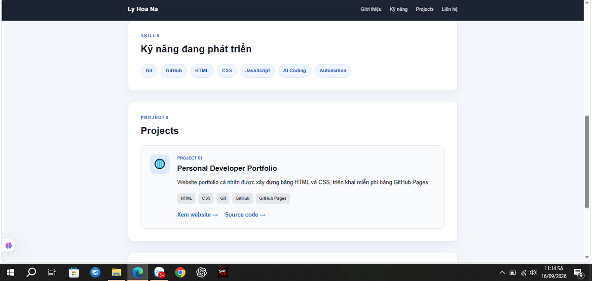
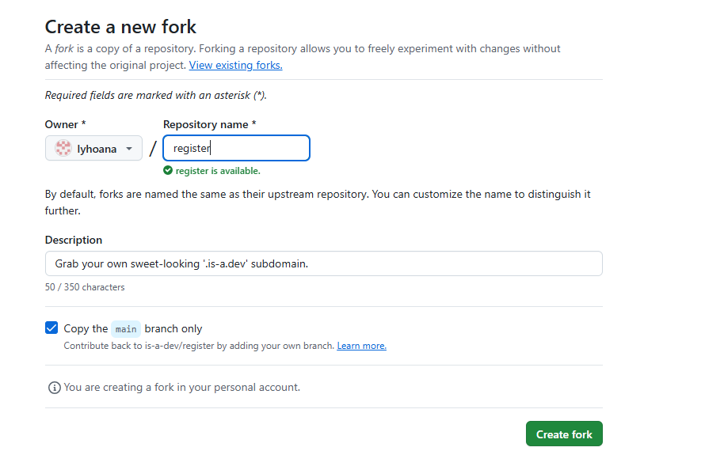
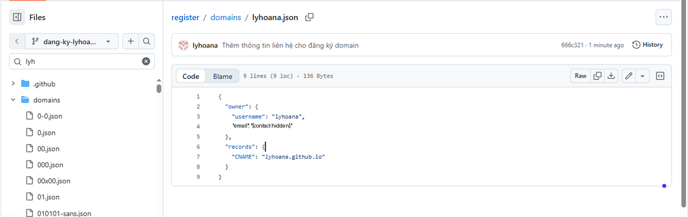
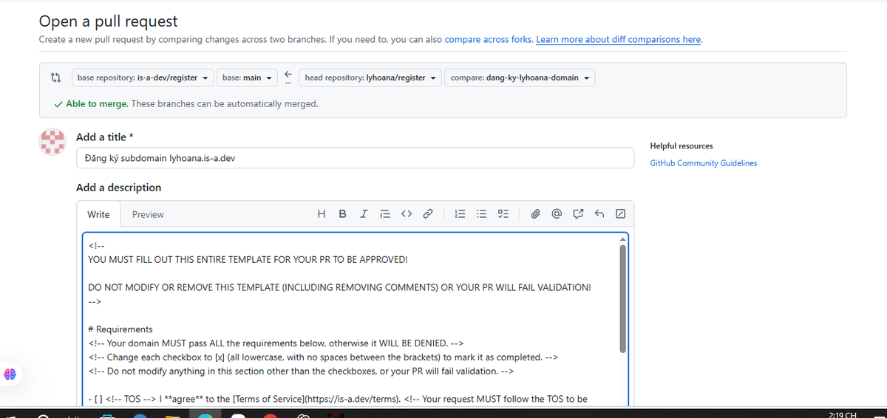
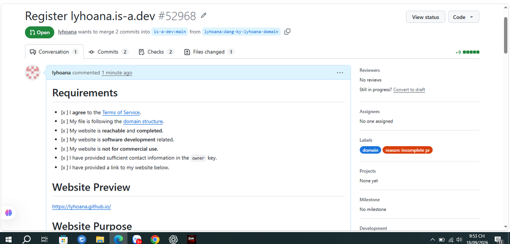
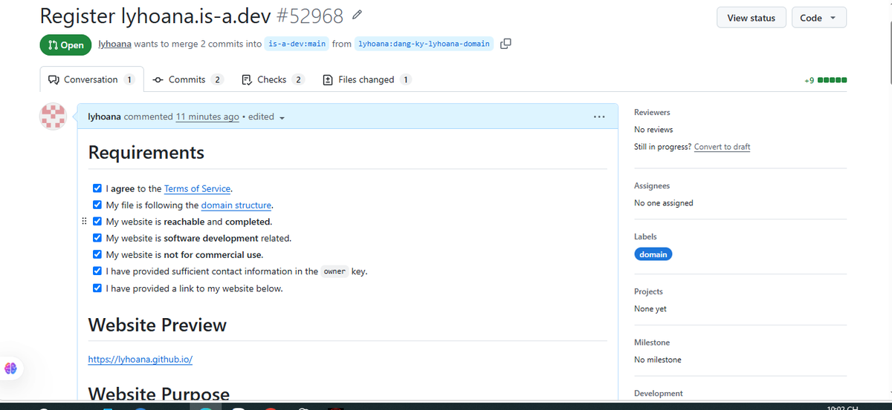
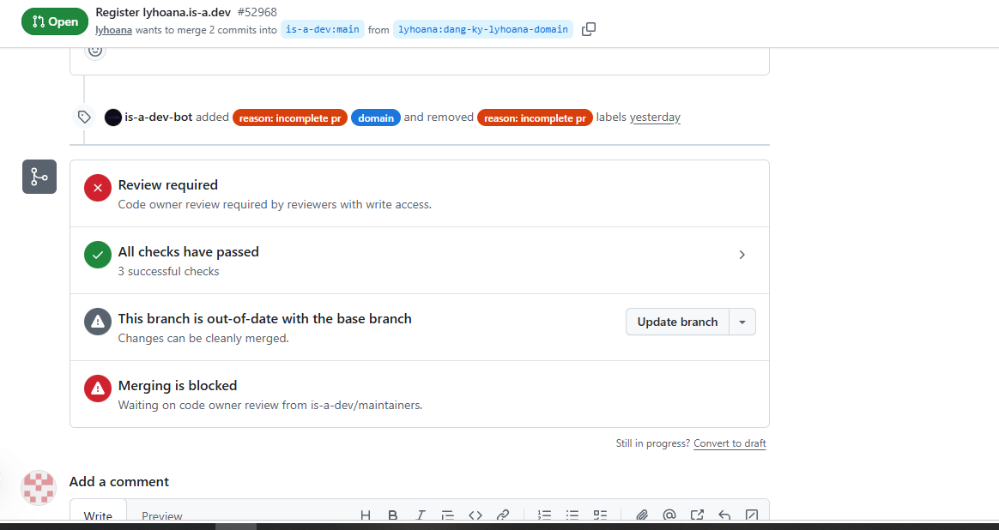
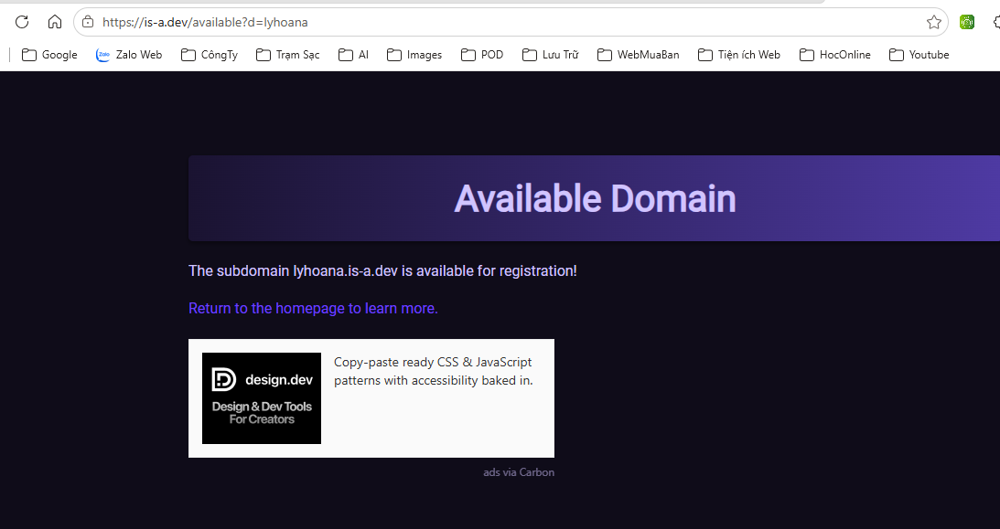

GitHub Pages và is-a.dev là gì?
GitHub Pages là dịch vụ hosting website tĩnh trực tiếp từ repository GitHub.
Với website cá nhân dạng user site, repository thường có tên
username.github.io và website mặc định sẽ chạy tại địa chỉ tương ứng.
is-a.dev không thay thế GitHub Pages. Nó cung cấp một subdomain dạng
tenban.is-a.dev. Trong bài này, GitHub Pages vẫn là nơi host website,
còn is-a.dev là địa chỉ đẹp hơn trỏ về website đó.
lyhoana.is-a.dev → lyhoana.github.io → website trên GitHub Pages.
- Tạo repository GitHub Pages.
- Tạo website HTML/CSS và deploy.
- Kiểm tra điều kiện của is-a.dev.
- Fork repository is-a.dev/register.
- Tạo branch đăng ký domain.
- Tạo file JSON cho subdomain.
- Tạo Pull Request.
- Sửa lỗi CI/bot nếu có.
- Chờ maintainer merge.
- Kết nối custom domain vào GitHub Pages.
1. Tạo website GitHub Pages
Mình bắt đầu bằng repository cá nhân:
lyhoana.github.ioVới user site, cách đặt tên này rất quan trọng vì GitHub Pages dùng nó để tạo địa chỉ mặc định:
https://lyhoana.github.io/Website ban đầu của mình chỉ cần những file cơ bản:
lyhoana.github.io/
├── index.html
├── style.css
└── README.md
Sau khi thêm index.html và style.css, commit thay đổi,
GitHub Pages có thể publish website trực tiếp từ repository.

2. Hoàn thiện website trước khi xin is-a.dev
Đây là bước dễ bị bỏ qua. Theo tài liệu is-a.dev hiện tại, website nên tương đối hoàn chỉnh, liên quan tới software development và không dùng cho mục đích thương mại.
Vì vậy mình hoàn thiện trước các phần:
- Giới thiệu cá nhân.
- Kỹ năng.
- Projects.
- Liên hệ.
- Responsive cho mobile.
3. Fork repository đăng ký của is-a.dev
is-a.dev quản lý việc đăng ký domain thông qua GitHub.
Mình vào repository is-a-dev/register và tạo một fork về tài khoản của mình.

Sau khi fork, mình có repository:
lyhoana/registerFork là bản sao của repository gốc dưới tài khoản của mình. Mình có thể chỉnh sửa fork mà không tác động trực tiếp đến repository chính.
4. Tạo branch riêng để đăng ký domain
Thay vì sửa trực tiếp trên main, mình tạo branch riêng:
dang-ky-lyhoana-domain
Cách này giúp main giữ sạch và toàn bộ thay đổi đăng ký domain
nằm trong một branch riêng. Sau này branch này được dùng để tạo Pull Request.
5. Tạo file domain JSON
Trong repository fork, is-a.dev lưu từng domain dưới thư mục:
domains/Với subdomain mình muốn là:
lyhoana.is-a.devtên file được tạo là:
domains/lyhoana.json
Website của mình nằm ở lyhoana.github.io, nên bản ghi CNAME
trỏ đến GitHub Pages:
{
"owner": {
"username": "lyhoana",
"email": "YOUR_PUBLIC_CONTACT_EMAIL"
},
"records": {
"CNAME": "lyhoana.github.io"
}
}YOUR_PUBLIC_CONTACT_EMAIL bằng thông tin liên hệ mà bạn
chấp nhận công khai trong repository.

6. Commit thay đổi
Sau khi kiểm tra JSON, mình commit file vào branch đăng ký. Một commit message dễ hiểu sẽ giúp lịch sử repository rõ ràng hơn, ví dụ:
Đăng ký subdomain lyhoana.is-a.devTrong quá trình làm, mình còn thêm thông tin liên hệ và tạo thêm một commit. Đây cũng là lúc mình thấy Git hoạt động giống một hệ thống “save point”: mỗi commit ghi lại một mốc thay đổi cụ thể.
7. Tạo Pull Request về repository is-a.dev/register
Khi branch đã có thay đổi, mình chọn Compare & pull request. Cấu hình đúng sẽ có dạng:
base repository: is-a-dev/register
base: main
head repository: lyhoana/register
compare: dang-ky-lyhoana-domain
Điền PR template thật cẩn thận
is-a.dev dùng template và bot validation. Những phần quan trọng mình phải điền gồm:
- Các checkbox Requirements.
- Website Preview.
- Website Purpose.
Một lỗi mình đã gặp là checkbox nhìn trên Preview có vẻ đúng, nhưng source Markdown lại viết:
[x ]Bot yêu cầu chính xác:
[x]
Sau khi sửa lại checkbox đúng chuẩn, label lỗi biến mất và validation chạy lại.

8. CI pass chưa có nghĩa là domain đã hoạt động
Sau khi bot kiểm tra, mình thấy trạng thái:
All checks have passedNhưng PR vẫn cần code owner/maintainer review trước khi merge. Có thời điểm branch của mình còn báo “out-of-date with the base branch”. GitHub cho phép update branch khi thay đổi có thể merge sạch.

Đây là chỗ mình học được một điểm rất quan trọng: Pull Request Open chưa có nghĩa là thay đổi đã nằm trong repository chính.
9. Chờ Pull Request được merge
Trước khi PR merge, mình thử kiểm tra domain và trang is-a.dev vẫn báo subdomain còn available. Điều đó hoàn toàn bình thường vì file JSON vẫn chỉ nằm trong branch/fork của mình.

Chỉ khi maintainer merge Pull Request thì
domains/lyhoana.json mới xuất hiện trên branch main
của repository chính.
10. Kết nối is-a.dev với GitHub Pages
Đây là bước cuối cùng và nên làm sau khi Pull Request đã được merge. Mình quay lại repository website:
lyhoana/lyhoana.github.ioSau đó vào:
Settings
→ Pages
→ Custom domainvà nhập:
lyhoana.is-a.dev
GitHub Pages sẽ lưu custom domain. Nếu site publish từ branch,
GitHub có thể tạo file CNAME ở root repository.
File của mình hiện có nội dung:
lyhoana.is-a.devSau khi DNS và chứng chỉ được cập nhật, mình bật Enforce HTTPS.
Website vẫn được host bằng GitHub Pages, nhưng có thể truy cập bằng
https://lyhoana.is-a.dev/.
Những lỗi mình đã gặp và cách xử lý
1. Thư mục domains có quá nhiều file
GitHub có thể báo danh sách trong thư mục domains bị truncate.
Đây không phải lỗi đăng ký domain. Cách đơn giản là tạo file từ root repository
và nhập cả đường dẫn:
domains/lyhoana.json2. Branch bị chậm hơn main
Repository is-a.dev có rất nhiều Pull Request nên main thay đổi liên tục.
Nếu branch cũ chưa có thay đổi quan trọng, có thể sync fork rồi tạo branch mới.
Nếu PR đã tồn tại và GitHub cho phép clean merge, có thể dùng
Update branch.
3. Bot báo Incomplete PR template
Đừng chỉ nhìn tab Preview. Hãy kiểm tra source Markdown.
Trường hợp của mình là [x ] thay vì [x].
4. Domain chưa vào được dù CI đã pass
CI pass chỉ cho biết kiểm tra tự động đã ổn. Domain chưa được cấp cho đến khi maintainer merge Pull Request.
5. PR merge rồi nhưng website vẫn chưa chạy domain mới
Sau khi merge, cần cấu hình Settings → Pages → Custom domain ở repository GitHub Pages. DNS và HTTPS cũng có thể cần thời gian để cập nhật.
Mình đã học được gì từ project này?
Ban đầu mục tiêu chỉ là có một website cá nhân và một domain đẹp hơn. Nhưng trong quá trình làm, mình đã thực hành gần như trọn một workflow GitHub thực tế:
Repository
→ Commit
→ GitHub Pages
→ Fork
→ Branch
→ Pull Request
→ CI / Bot validation
→ Fix lỗi
→ Maintainer review
→ Merge
→ Custom domainĐiều mình thấy đáng giá nhất là GitHub không còn chỉ là chỗ “đăng code”. Nó là nơi mình có thể xây project, lưu lịch sử thay đổi, cộng tác với open-source, review lỗi và deploy sản phẩm thật.
Tài liệu chính thức nên đọc
- GitHub Pages Quickstart
- GitHub Docs - Managing a custom domain
- is-a.dev Quickstart
- is-a.dev - GitHub Pages Guide